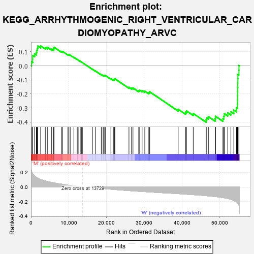
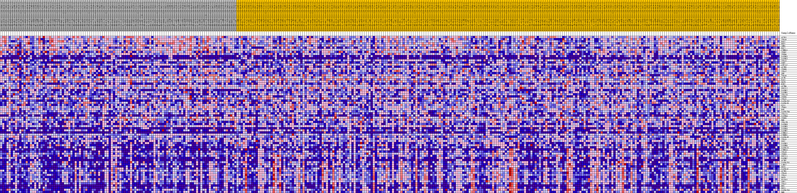
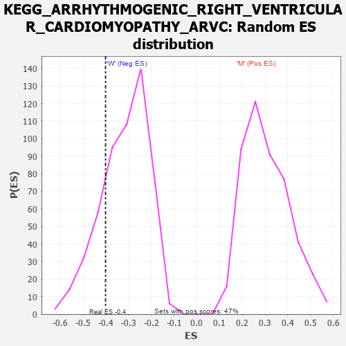

| Dataset | MUC16.MUC16.cls#M_versus_W.MUC16.cls#M_versus_W_repos |
| Phenotype | MUC16.cls#M_versus_W_repos |
| Upregulated in class | W |
| GeneSet | KEGG_ARRHYTHMOGENIC_RIGHT_VENTRICULAR_CARDIOMYOPATHY_ARVC |
| Enrichment Score (ES) | -0.40117937 |
| Normalized Enrichment Score (NES) | -1.2686927 |
| Nominal p-value | 0.20377359 |
| FDR q-value | 1.0 |
| FWER p-Value | 0.959 |

| PROBE | DESCRIPTION (from dataset) | GENE SYMBOL | GENE_TITLE | RANK IN GENE LIST | RANK METRIC SCORE | RUNNING ES | CORE ENRICHMENT | |
|---|---|---|---|---|---|---|---|---|
| 1 | ACTG1 | na | 124 | 0.226 | 0.0289 | No | ||
| 2 | ITGA6 | na | 446 | 0.183 | 0.0484 | No | ||
| 3 | DSG2 | na | 449 | 0.183 | 0.0737 | No | ||
| 4 | PKP2 | na | 960 | 0.152 | 0.0854 | No | ||
| 5 | LMNA | na | 1426 | 0.133 | 0.0954 | No | ||
| 6 | DSC2 | na | 1540 | 0.130 | 0.1114 | No | ||
| 7 | CTNNA1 | na | 1713 | 0.125 | 0.1255 | No | ||
| 8 | ITGB7 | na | 1803 | 0.122 | 0.1408 | No | ||
| 9 | ITGB4 | na | 2567 | 0.104 | 0.1413 | No | ||
| 10 | CACNG5 | na | 3791 | 0.085 | 0.1308 | No | ||
| 11 | CACNG3 | na | 4329 | 0.077 | 0.1318 | No | ||
| 12 | ITGA3 | na | 5481 | 0.064 | 0.1198 | No | ||
| 13 | CDH2 | na | 6014 | 0.059 | 0.1182 | No | ||
| 14 | ATP2A2 | na | 6053 | 0.058 | 0.1256 | No | ||
| 15 | ACTN3 | na | 6128 | 0.057 | 0.1322 | No | ||
| 16 | ITGB8 | na | 8068 | 0.041 | 0.1027 | No | ||
| 17 | ITGA2 | na | 8372 | 0.038 | 0.1024 | No | ||
| 18 | JUP | na | 9796 | 0.026 | 0.0803 | No | ||
| 19 | ITGA4 | na | 10043 | 0.024 | 0.0792 | No | ||
| 20 | ACTB | na | 10388 | 0.022 | 0.0760 | No | ||
| 21 | DAG1 | na | 11369 | 0.015 | 0.0603 | No | ||
| 22 | SGCB | na | 12264 | 0.009 | 0.0454 | No | ||
| 23 | RYR2 | na | 12678 | 0.007 | 0.0388 | No | ||
| 24 | ACTN4 | na | 13204 | 0.003 | 0.0298 | No | ||
| 25 | TCF7L2 | na | 13256 | 0.003 | 0.0292 | No | ||
| 26 | CACNG2 | na | 13435 | 0.002 | 0.0262 | No | ||
| 27 | CACNB1 | na | 13616 | 0.001 | 0.0231 | No | ||
| 28 | ITGA10 | na | 16276 | -0.006 | -0.0242 | No | ||
| 29 | ITGB6 | na | 17054 | -0.011 | -0.0368 | No | ||
| 30 | ITGAV | na | 18634 | -0.019 | -0.0628 | No | ||
| 31 | CACNA2D2 | na | 19116 | -0.021 | -0.0686 | No | ||
| 32 | CACNA1D | na | 19330 | -0.022 | -0.0694 | No | ||
| 33 | GJA1 | na | 19550 | -0.023 | -0.0702 | No | ||
| 34 | ITGB1 | na | 19692 | -0.024 | -0.0695 | No | ||
| 35 | DSP | na | 21180 | -0.031 | -0.0922 | No | ||
| 36 | CACNA2D4 | na | 21832 | -0.033 | -0.0994 | No | ||
| 37 | ITGA11 | na | 22015 | -0.034 | -0.0980 | No | ||
| 38 | CACNG4 | na | 22112 | -0.034 | -0.0950 | No | ||
| 39 | ITGB5 | na | 22239 | -0.035 | -0.0924 | No | ||
| 40 | EMD | na | 25969 | -0.050 | -0.1531 | No | ||
| 41 | ITGA2B | na | 26652 | -0.052 | -0.1582 | No | ||
| 42 | CACNG8 | na | 27031 | -0.054 | -0.1576 | No | ||
| 43 | CACNB3 | na | 28554 | -0.059 | -0.1770 | No | ||
| 44 | CACNG6 | na | 28812 | -0.060 | -0.1734 | No | ||
| 45 | CACNB2 | na | 29448 | -0.062 | -0.1763 | No | ||
| 46 | CTNNA2 | na | 30168 | -0.064 | -0.1804 | No | ||
| 47 | CTNNB1 | na | 31234 | -0.068 | -0.1904 | No | ||
| 48 | CACNA1F | na | 31466 | -0.068 | -0.1851 | No | ||
| 49 | ITGA5 | na | 39004 | -0.092 | -0.3089 | No | ||
| 50 | TCF7 | na | 40967 | -0.099 | -0.3308 | No | ||
| 51 | CACNG1 | na | 41234 | -0.100 | -0.3218 | No | ||
| 52 | CACNB4 | na | 43002 | -0.106 | -0.3392 | No | ||
| 53 | CACNA1S | na | 46425 | -0.120 | -0.3847 | Yes | ||
| 54 | CTNNA3 | na | 46595 | -0.120 | -0.3711 | Yes | ||
| 55 | ITGA8 | na | 47015 | -0.122 | -0.3618 | Yes | ||
| 56 | ITGB3 | na | 48809 | -0.132 | -0.3760 | Yes | ||
| 57 | TCF7L1 | na | 48900 | -0.132 | -0.3594 | Yes | ||
| 58 | CACNG7 | na | 50876 | -0.146 | -0.3750 | Yes | ||
| 59 | ACTN2 | na | 51112 | -0.148 | -0.3587 | Yes | ||
| 60 | CACNA2D1 | na | 51233 | -0.149 | -0.3403 | Yes | ||
| 61 | LAMA2 | na | 52158 | -0.159 | -0.3351 | Yes | ||
| 62 | SGCG | na | 52986 | -0.170 | -0.3266 | Yes | ||
| 63 | CACNA1C | na | 53758 | -0.186 | -0.3150 | Yes | ||
| 64 | ACTN1 | na | 54464 | -0.207 | -0.2992 | Yes | ||
| 65 | ITGA9 | na | 54702 | -0.218 | -0.2734 | Yes | ||
| 66 | ITGA1 | na | 54730 | -0.220 | -0.2435 | Yes | ||
| 67 | SGCD | na | 54739 | -0.220 | -0.2133 | Yes | ||
| 68 | SLC8A1 | na | 54748 | -0.221 | -0.1830 | Yes | ||
| 69 | LEF1 | na | 54771 | -0.222 | -0.1527 | Yes | ||
| 70 | ITGA7 | na | 54800 | -0.224 | -0.1223 | Yes | ||
| 71 | DES | na | 54823 | -0.225 | -0.0917 | Yes | ||
| 72 | SGCA | na | 54832 | -0.225 | -0.0608 | Yes | ||
| 73 | CACNA2D3 | na | 55108 | -0.248 | -0.0315 | Yes | ||
| 74 | DMD | na | 55117 | -0.249 | 0.0027 | Yes |

